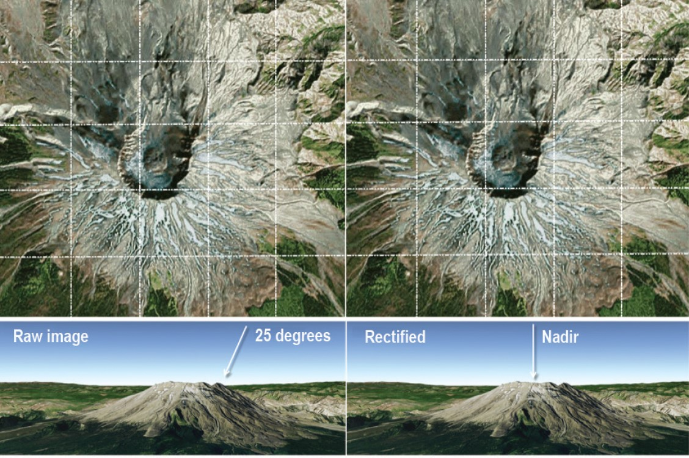

Chapter 3 - Remote sensing data and Corrections
Summary
Corrections
Geometric correction
- Image distortion due to sensor imaging method
- Effect of changes in orientation elements outside the sensor
- Image point displacement due to terrain undulation
- Image distortion due to earth curvature
- Image distortion due to atmospheric refraction
- Effects of the Earth’s rotation Source:Principles and application of remote sensing by Jiabing Sun
- Identify Ground Control Points (GPS) to match known points in the image and a reference dataset
(1)local map
(2)another image
(3)GPS data from handheld device - We take the coordinates and model them to give geometric transformation coefficients
- linear regression with our distorted x or y as the dependent or independent
- plot these and try to minimise the RMSE (Jensen sets a RMSE value of 0.5)
- There are many transformation algorithms available to model the actual coordinates

then..

- This means for every value in the output (gold standard) pixel we can get a value in the original input image. The images are distorted as so might not completely overlap
- RMSE
- (observed - predicted (the residual))^2
- sum them and divide by number of data points
- square root that total
- Re-sample

Source:Abdul Basith
Atmospheric correction
Relative(to something)
Normalize intensities of different bands within a single image; Normalise intensities of bands from many dates to one dateAbsolute(definitive)
(1)Change digital brightness values into scaled surface reflectance, then compare thesescaled surface reflectance values across the planet
(2)atmospheric radiative transfer models
(3)However, nearly all assume atmospheric measurements are available which are used to “invert” the image radiance to scaled surface reflectance
(4)The scattering and absorption information comes from atmopshierc radiative transfer code such as MODTRAN 4+ and the Second Simulation of the Satellite Signal in the Solar Spectrum (6S)Flowchart for various relative and absolute methods for atmospheric correction of satellite measured radiance. Source:researchgate
Orthorectification / Topographic correction
What is orthorectified imagery - Using elevation to enable accurate image georeferencingImagery has an amazing amount of information, but raw aerial or satellite imagery cannot be used in a GIS until it has been processed such that all pixels are in an accurate (x,y) position on the ground.The orthorectification process requires: An accurate description of the sensor, typically called the sensor model; detailed information about the sensor location and orientation for every image; and an accurate terrain model, such as the World Elevation service available from ArcGIS Online. After imagery has been orthorectified, it can be used within a GIS and accurately overlaid with other data layers.

Radiometric
Radiometric calibration, also known as radiometric correction, is important to successfully convert raw digital image data from satellite or aerial sensors to a common physical scale based on known reflectance measurements taken from objects on the ground’s surface. This type of correction is important for reliable quantitative measurements of the imagery.
The process of radiometric correction